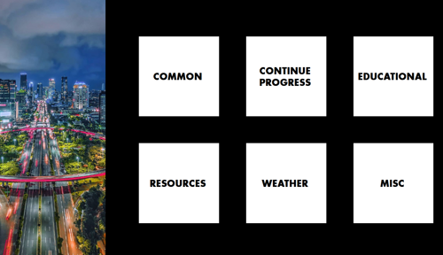
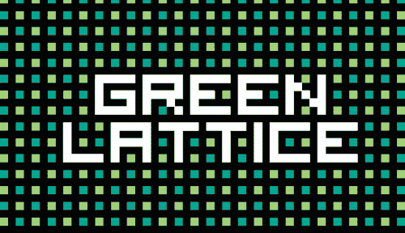
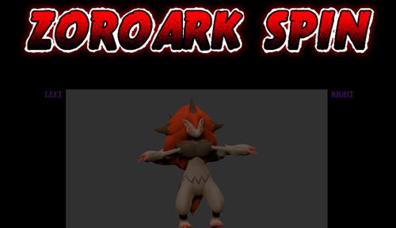

A custom startpage for your browser
that aims for a bold and sleek look.

(contributed, made by jcb1032)
An overlay for Reddit's 2022 /r/place event,
used to help coordinate and preserve art.

Recreation of a dream I had.
Why did I have it? I... I still don't know.